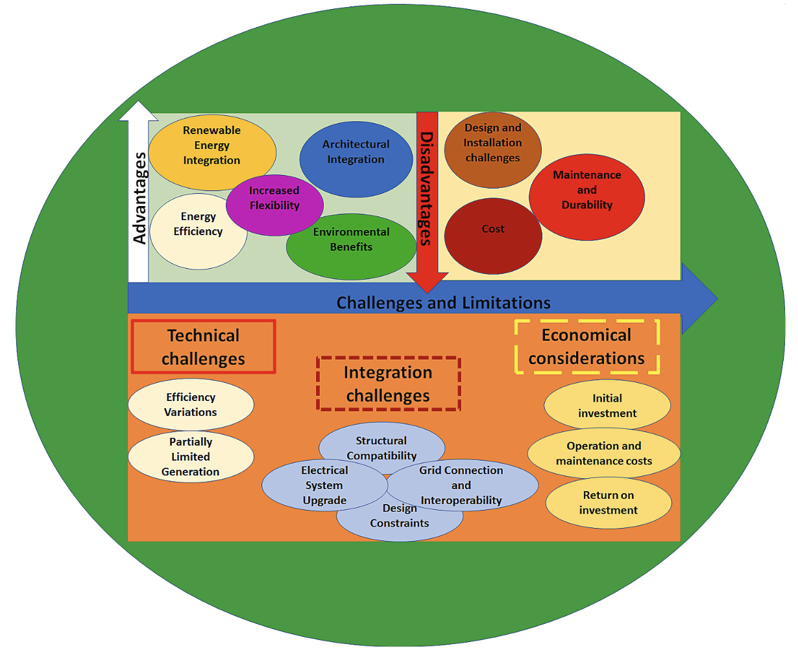

ML-Enhanced All-PV Blended Energy System
Overview: A complete renewable energy system model for buildings using diverse photovoltaic technologies, machine learning prediction models, and real-time cloud monitoring. This project aims for energy self-sufficiency, carbon emission reduction, and intelligent control via IoT and simulation platforms.
1. Problem Statement & Motivation
Modern architecture demands seamless renewable integration. We address limitations in traditional PV setups by creating a flexible, multi-surface PV framework combined with machine learning for smarter energy forecasting.
2. System Architecture
Includes rooftop PV, BIPV windows, and transparent glass-integrated PV. It ensures full surface solar harvesting suitable for both urban and institutional buildings.
3. Machine Learning & Simulation Framework
Python ML models and HOMER Pro simulations were used for optimal sizing and forecasting. Inputs include irradiance, angles, orientation, and hourly usage patterns.

ThingSpeak IoT Dashboard
Real-time parameters like voltage, current, temperature, and power are monitored on a cloud dashboard for proactive insights.

5. Performance Simulation & City Comparison
Simulated across 7 cities, the blended PV setup showed high yield and better ROI compared to single-surface systems.
6. Layout and Grid Integration
Illustrates hybrid AC/DC layout with bi-directional metering and net metering advantages.

7. Key Highlights
- Up to 78% self-sufficiency achieved
- ML-based predictive load and generation modeling
- Live dashboard via ThingSpeak integration
- Reduced CO₂ emissions in all modeled cities
8. Conclusion
The project presents a scalable smart building energy model combining machine learning, cloud analytics, and full-surface solar PVs—aligning energy performance with sustainability targets.
9. Publication
Title: Machine learning-enhanced all-photovoltaic blended systems for energy-efficient sustainable buildings
Journal: Cleaner Energy Systems, Elsevier
DOI: 10.1016/j.cles.2024.100180
Authors: Mostofa, K. Z., Islam, M. A., & others (2024)